1. Introduction
Academic research papers have several integral and peripheral aspects apart from the core content such as the authors’ professional affiliations, the number of references or the text readability, to name a few. While the methods and ideas presented in the core content are the most crucial and driving factor for the paper to be accepted by peer reviewers to a conference, it is possible that the aforementioned non-core aspects also influence or contribute to the decision unknowingly. It is possible that the presence of these factors in a certain measure is a subtle indication of a high-quality research paper. For example, it is possible that because the author belongs to one of the topmost universities, she already has a good history of accepted research papers, and her next research paper will have highly innovative ideas articulated well and thus, stand a good chance of acceptance.
Our project explores this idea, and aims to assess if these non-core-content factors could play a role in predicting the chances of a paper being accepted to a conference. It must be noted that we do not intend to say that peer-reviewers get biased or make decisions because of the presence of these factors. We hypothesize that research papers, potentially acceptable because of their merit, may have these factors in common.
Thus, while our primary motivation is to test the above hypothesis, the secondary motivation is to be able to assist academics in the peer reviewing process. While we do not mean to undermine the valuable role peer reviewers play in this process, it must be noted that the process of peer-reviewing has come under scrutiny in the recent years, [5] thanks to loopholes such as lack of qualified reviewers or lack of mechanisms to verify claims of the authors. For example, Walsh et al. (2000) [14] found differences in courtesy between signed and unsigned reviews. (Roberts and Verhoef, 2016) [18] and (Tomkins et al., 2017) [19] found single-blindreviews leading to increased biases towards male authors. Langford and Guzdial (2015) [20] pointed to inconsistencies in the peer review process.
With the huge volume of papers being churned out in any single area of computing (in 2020 alone, 7737 papers were submitted to the AAAI conference [2]), a tool to perform a preliminary analysis of papers could help highlighting potentially acceptable papers and recommending them to reviewers, thus expediting the process.
In order for the tool to have more capabilities for recommendation than relying on non-core factors, we also intend to use unsupervised methods to find patterns in the data and explore its underlying structure, through tasks like topic-modelling and clustering. This could help in detecting topic and domain trends over conferences over several years and or in ascertaining peculiarities of papers potentially acceptable papers.
2. Previous Work
Kang, et. al. [1] have published the PeerRead dataset where they experimented with Paper Acceptance classification, using 22 coarse features, e.g., length of the title and whether jargon terms such as ‘deep’ and ‘neural’ appear in the abstract, as well as sparse and dense lexical features like Glove and TFIDF embeddings of abstract to, with an accuracy of 65.3%. [12] use a subset of these features to predict the acceptance of papers by training on the ICLR 2017 data using a few basic ML algorithms. We build on these techniques to try and improve the results of paper acceptance classification for the ICLR 2017 dataset. We add our own features, eliminate a few, and experiment with a much wider range of supervised and introduce attention-based encodings in the lexical features set. There hasn’t been work on the unsupervised front for this dataset, which allows our unsupervised analysis to be a good baseline.
3. Methods
3.1 Data
We have downloaded and parsed the dataset using PeerReed [1] which is a dataset of scientific peer reviews available to help researchers study this important artifact. The dataset consists of 14.7K paper drafts and the corresponding accept/reject decisions in top-tier venues including ACL, NIPS and ICLR. The dataset also includes 10.7K textual peer reviews written by experts for a subset of the papers.
| Section | No of Papers | No of Reviews | Ratio of Accepted vs Rejected |
|---|---|---|---|
| NIPS 2013–2017 | 2420 | 9152 | 2420/0 |
| ICLR 2017 | 427 | 1304 | 172/255 |
| ACL 2017 | 137 | 275 | 88/49 |
| CoNLL 2016 | 22 | 39 | 11/11 |
| arXiv 2007–2017 | 11778 | - | 2891/8887 |
| Total | 14784 | 10770 | - |
Upon closer inspection we found several inconsistencies in the data - for example, not all papers from NIPS or ACL had their accept/reject decisions. Besides, the data for ACL and CoNLL was too less to be used for training a model. That is why, from all the data available, we have focussed our supervised learning work on ICLR 2017 data. For the papers which didn’t have labels of acceptance, like arXiv were used for unsupervised tasks which didn’t rely on class labels.
For unsupervised learning, clustering used ICLR 2017 data which had information for 349 papers. For topic modelling, all the data from ICLR 2017 + CONLL + ACL and the complete arxiv dataset was used which contained data for 349, 19, 123 and 10,599 papers respectively (11090 papers in total). We receive raw pdfs and their reviews and labels (accept/reject) as our input, transform them into JSON files using science-parse, a library created by the PeerRead authors.
3.2 Data Processing
We pre-processed 2 types of data: the papers, and the reviews that were left on the paper.
3.2.1 Data from Papers
By parsing the JSONs we constructed the following features based on different parts of the paper (eg. abstract, references) for our supervised learning dataset. The labels were booleans for accepted or rejected decisions.| Feature | Construction and Usage. | Data Type | Intuition |
|---|---|---|---|
| *words from top 200 title | By forming a word cloud of the words of top 200 ranked ICLR 2017 papers and taking most frequent 5% of those words. If the abstract contains atleast 2 words from the mentioned word cloud | bool | Words from the topmost papers in the recent years denote the current technology trends of that conference |
| abstract length | Word count of the abstract | int | Good papers have longer or shorter abstracts? |
| *abstract complexity | Average of the Flesch and Dale-Chall readability scores of the abstract. | float | Abstract readability represents paper complexity. Are good papers challenging to read? |
| *abstract novelty | Check abstract for occurence of novelty denoting words like “outperforms”,”state-of-the-art” | Highly innovative or outperforming SOTA papers are potentially acceptable | |
| number of authors | JSON Parsing | int | Does more authors mean a better paper? |
| *research strength score | Use CSRankings to infer authors’ affiliation from their email. Find each author’s uni’s research strength in AI (Geometric Mean count of all papers published in AI) Take average of this research score of all authors | float | If the author is affiliated to |
| num of references | Count number of papers referenced | int | More references --> thorough research --> better paper? |
| most recent ref year | The latest year from which a paper was referenced | int | Does building on the latest research imply good research? |
| avg len of ref mention | Average length of references mentioned | float | Do the papers you reference have long titles and many authors and does that mean good a paper? |
| num of recent references | Number of recent references since the paper submitted | int | Does building on the latest research imply good research? |
| *contains github link | Parse JSON for github links of code | bool | Open source is good! Transparency is good! |
| contains appendix | Parse JSON for Appendixes | bool | Appendixes usually mean the authors have a lot to say. |
| number of sections | Parse JSON and count number of sections | int | Do many sections and lots of figures mean a good paper? |
| *content complexity | Average of the Flesch and Dale-Chall readability scores of the abstract. | float | Are good papers challenging to read? |
| number of unique words | Diversity of language and terminologies used | int | What does jargon and good articulation imply? |
| *feature extraction encoding | HuggingFace’s DistilBert encoding of the abstract text | 768 long vector | Incorporating Attention-based embeddings represent a paper. |
| tfidf encoding | Abstracts of all papers form documents. Represent each abstract as document wrt to to other abstract | Vocab size vector | How unique is one paper amongst all other submissions |
For unsupervised learning, clustering used ICLR 2017 data which had data for 349 papers. For topic modelling, all the data from ICLR 2017 + CONLL + ACL and the complete arxiv dataset was used which contained data for 349, 19, 123 and 10,599 papers respectively (11090 papers in total).
3.2.2 Data from Paper Peer-Reviews
We parse the JSON to form a data frame of our own which has the following 11 features and number of rows, according to the task as highlighted above.| Field Name | Description | Notes |
|---|---|---|
| ID (int) | Unique Identifier for each paper | Used to join dataframes |
| Title (string) | Title of the paper | Used to make sense of results in place of plain ID |
| Abstract (string) | Abstract of the paper | Using TF-IDF to process it numerically |
| Meaningful Comparison (int) | Score on a scale of 10 if the paper makes meaningful comparisons. | Score is per review so aggregated by taking a mean. Not available for all reviews so not so useful. |
| Correctness (int) | Score for the correctness of the paper as seen by reviewer | Score is per review so aggregated by taking a mean. Not available for all reviews so not so useful. |
| Originality (int) | Score for the originality of the paper as seen by reviewer | Score is per review so aggregated by taking a mean. Not available for all reviews so not so useful. |
| Clarity (int) | Score for the clarity of the paper as seen by reviewer | Score is per review so aggregated by taking a mean. Not available for all reviews so not so useful. |
| Reviews (list of strings) | Actual reviews by each reviewer | Using TF-IDF to process it numerically |
| Recommendation (int) | Recommendation a scale of 10 by each reviewer | Score is per review so aggregated by taking a mean. Not available for all[5]reviews so not so useful. |
| Reviewers Confidence (int) | Confidence of each reviewer | Score is per review so aggregated by taking a mean. Not available for all reviews so not so useful. |
| Result (boolean) | Was paper accepted or rejected | Label for learning |
We then also merge/join both the datasets using the common key, which is the paper ID which helps us to do a complete analysis. There is repetitive info in both the data frames which is simply discarded.
We believe our approach could solve the problem better due to our design choices, wiser choice of features and extensive experimentation. Our approach makes use of some wise design choices such as using FAMD (factorial analysis of mixed data) as opposed to PCA, as the dimension reduction method for data described both by quantitative and qualitative variables, or not changing feature-space at all for algorithms like Random Forest. We also use GridSearch and k-fold cross validation to find the right choice of hyperparameters. Our approach introduces several new features which we believe are more meaningful than some of the ones used in the baseline model. For example, the research strength of authors based on their academic affiliation or the paper readability would make much more difference than, say, just a BOW representation of the abstract. We have discarded such features from the baseline model and engineered all the ones marked with an asterisk completely by ourselves after careful consideration and brainstorming.
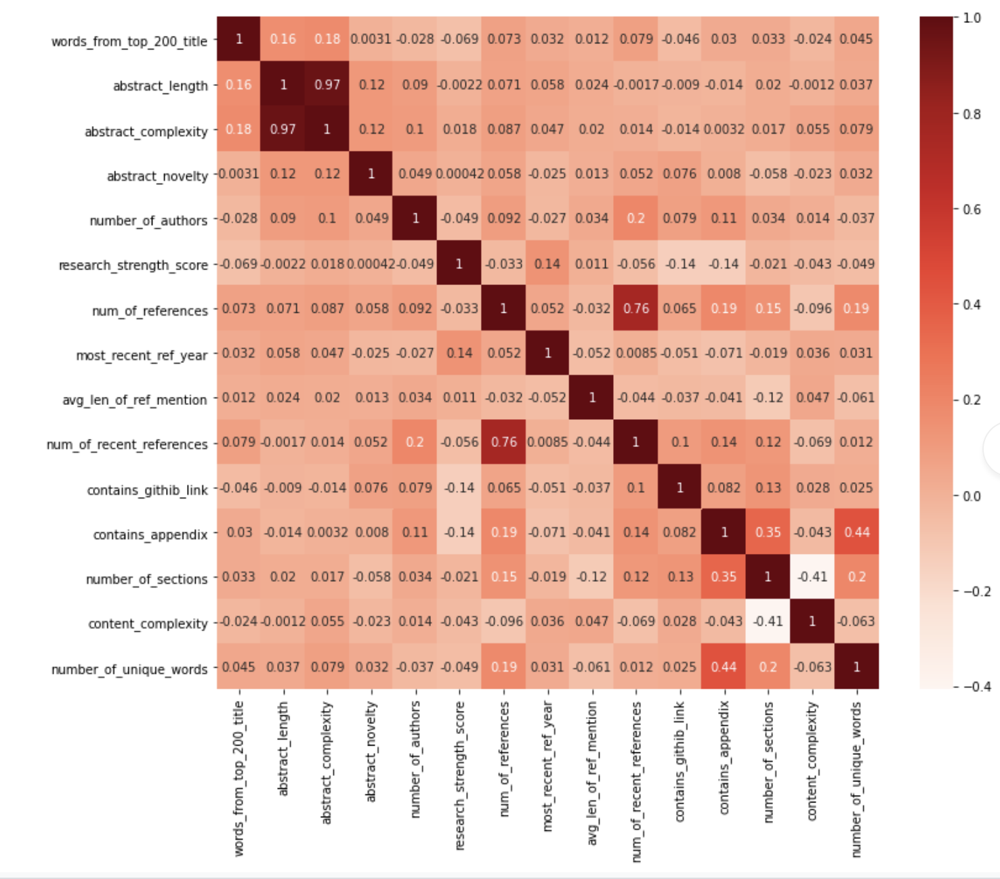
The baseline model uses Glove embeddings to encode the abstract. Glove word embeddings are context independent- these models output just one vector for each word, combining all the different senses of the word into one vector. We instead use BERT embeddings, which generate different word embeddings for a word that captures the context of a word. We believe this will help encode better words that contribute uniquely to the abstracts better and capture nuances of the paper that differentiate them from the rest. Additionally, we also experiment with several separate supervised learning models based solely on TFIDF and BERT embeddings. The baseline model had no exploratory unsupervised component, whereas we have used several unsupervised methods.
3.3 Feature analysis
We plot the following correlation matrix after processing our features. Plotting the correlation matrix of our processed features throws up some obvious observations like the high correlation between abstract_length and abstract_complexity (0.97) or between num_of_references and no_of_recent_references is high (0.76), but also some interesting ones - having an appendix means more unique words?4. Experiments and Results
4.1 Supervised
We essentially ran three different kinds of experiments with the feature set, described as follows- All the columns except the BERT and tf-idf encodings of the abstract were considered as the feature vectors of each paper, resulting in 15 features in total
- Only the BERT encodings of the abstract were considered as feature vectors of each paper, resulting in a 768 dimensional vector for each paper.
- Only the tf-idf encodings of the abstract were considered as feature vectors of each paper, resulting in a 5616 dimensional vector for each paper.
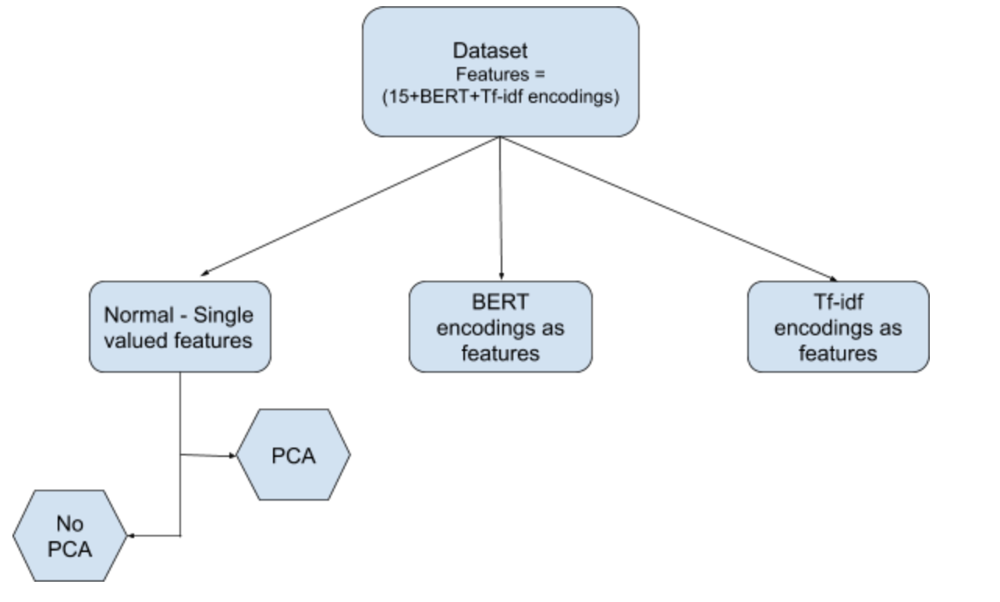
The data we collected from the website consisted of three sub-modules namely train, validation and test sets. We extracted the necessary features from the three sets individually. To ensure the consistency and equal-distribution of the two classes (accepted and rejected), we merged the validation and the test sets, now called the test set. Now, we have 349 data points in the train set and 77 data points in the test set. Our experiments were evaluated using the classic confusion matrix showing precision, accuracy and recall. We also took into account the F1-score.
4.1.1 Description of Experiments with Normal-Single Valued Features
In this set-up, the BERT encodings and the tf-idf encodings columns of the dataset were dropped, which left us with 15 features for each paper sample, in both the train and the test datasets. Without FAMD - To begin with, we implemented a Random Forest to study the features and their importances. In this case, the dimensionality dataset wasn’t reduced and all the 15 features were intact. Bootstrapping was set to True. The hyper-parameters we used are:
- N_estimators : Number of trees in the forest. Range - [50, 80, 100, 120, 180, 300, 500, 800, 1200]
- Max_depth - The maximum depth the tree can be built upto, Range - [5, 8, 15, 25, 30]
- Min_samples_split - The minimum number of samples required to split at a node while building the tree. Range - [2, 5, 10, 15, 100]
- Min_samples_leaf - The minimum samples required at a leaf node.
- Range - [1, 2, 5, 10]
The best parameters and results obtained were:
| Parameter Name | Parameter Value |
|---|---|
| N_estimators | 100 |
| Max_depth | 5 |
| Min_Samples_split | 5 |
| Min_Samples_leaf | 5 |
| Validation accuracy | 67.03% |
The confusion matrix on the test-set was:
| Prediction Values | ||
|---|---|---|
| Actual | 0 | 1 |
| 0 | 39 (TN) | 5 (FP) |
| 1 | 22 (FN) | 11 (TP) |
One of the trees in the Random Forest is visualized above. We have randomly picked up some trees from the forest and visualised their feature importances. We observe that the difference in feature importances of different trees is because of bootstrapping technique. The repeated sampling results in some datasets being formed from a small representation of the original dataset. Depending on the sampled dataset, only some features will extract their respective importance. It is interesting to observe that some of our assumptions used while feature engineering are perhaps holding - having words from titles of topmost papers makes a difference to the paper decision or a github link points to an open source paper which could probably mean good research work!
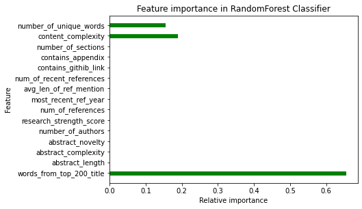 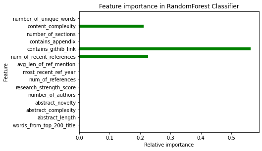 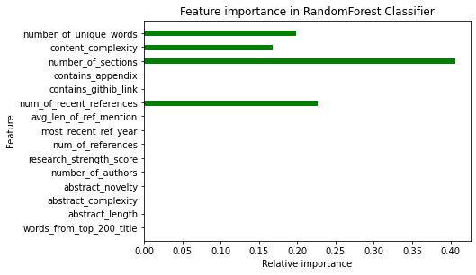
Implementation of PCA
Our dataset had both numeric and categorical variables. Thus, we considered a PCA implementation for a mixed-feature dataset. The number of components in the reduced dataset was determined by the percentage of retained variance. A threshold of 95% retained variance was applied which gave us 11 components. PCA was fit on train data and the test set was accordingly transformed. The below graph plots the proportion of variance to the number of principal components. It can be seen that the variance recovered increases as the number of principal components increases.
For each of the supervised algorithms, following steps were followed.
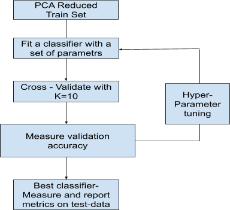
For all the experiments, the other hyperparameters except the ones mentioned were set to their default values. The Supervised learning algorithms experimented with in this set-up are:
- Logistic Regression
- Penalty: This parameter decides the type of regularisation added to the residual sum of squares to determine the loss function. Different values used for penalty are L2, L1 regularisation, elastic net (linear combination of L2 and L1)
- C : Inverse of regularization strength. Smaller values of C specify stronger regularization. A range of 1 to 100 was taken
- Fit_intercept : The boolean value which determines if an intercept term has to be fit in the equation between the predictor and the output variables
- Support Vector Machine
- Kernel - The type of kernel used in the algorithm. This is the function which transforms the input data into a high dimensional space and calculates the support vectors. Values taken - (rbf, poly, sigmoid)
- C - Regularization parameter. The strength of the regularization is inversely proportional to C. The penalty is a squared l2 penalty. Range taken - (1,100)
- Gamma - Kernel coefficient. Range taken - (1e-4,1e-2,0.0002)
- Random Forest
- N_estimators : Number of trees in the forest. Range - [50, 80, 100, 120, 180, 300, 500, 800, 1200]
- Max_depth - The maximum depth the tree can be built upto, Range - [5, 8, 15, 25, 30]
- Min_samples_split - The minimum number of samples required to split at a node while building the tree. Range - [2, 5, 10, 15, 100]
- Min_samples_leaf - The minimum samples required at a leaf node. Range - [1, 2, 5, 10]
- Adaboost
- N_estimators - The number of trees until the end of the boosting algo. Range - [50, 100, 250, 500]
- Learning rate - Learning rate shrinks the contribution of each classifier by learning_rate. Range - [1e-4, 1e-3, 1e-2, 1e-1, 1]
- XGBoost
- ETA - Step size shrinkage used in updates to prevent overfitting. After each boosting step, we can directly get the weights of new features, and eta shrinks the feature weights to make the boosting process more conservative. Range - [1e-7, 1e-6, 1e-5, 1e-4, 1e-3, 1e-2, 1e-1, 1]
- Gamma - Minimum loss reduction required to make a further partition on a leaf node of the tree. Range - [1, 10, 100]
- Alpha - L1 regularization term on weights. Range - [1e-7, 1e-6, 1e-5, 1e-4, 1e-3, 1e-2, 1e-1, 1]
- Reg_lambda - L2 regularization term on weights. Range - [1e-1, 1, 10, 100]
Since our final output labels are 0 and 1, we tried logistic regression to see how this algorithm performs. The hyper-parameters are:
| Parameter Name | Parameter Value |
|---|---|
| Penalty | L2 |
| C | 3 |
| Fit_intercept | True |
| Validation accuracy | 65.33% |
For the best set of parameters, the trends in validation accuracy was observed for a particular hyper-parameter, keeping the other hyper-parameters constant. The algorithm was run for 200 iterations with the liblinear solver. The best parameters and results obtained are given below.
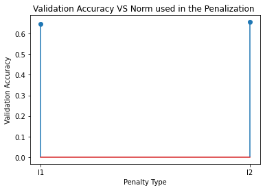 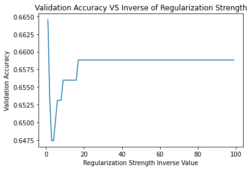We can see that in the figure above (on the left) that there is only a slight variation in the values for l1 and l2 norms. In the figure above (on the right) validation accuracy fluctuates with the value of C initially but remains constant after a specific value (around 20) is achieved. It can be inferred that, after this specific value, regularisation isn’t helping the data from avoiding over-fitting.
The confusion matrix on the test-set was:
| Prediction Values | ||
|---|---|---|
| Actual | 0 | 1 |
| 0 | 42 (TN) | 2 (FP) |
| 1 | 37 (FN) | 2 (TP) |
Observation : The value of False negatives is very high which reduced the value of true positives significantly.
The hyper-parameters are:
The formula of RBF kernel with coefficient gamma is given by: 
| Parameter Name | Parameter Value |
|---|---|
| Kernel | rbf |
| C | 50 |
| Gamma | 0.0047 |
| Validation accuracy | 65.03% |
The best parameters and results obtained are present in the table on the left. For the best set of parameters, the trends in validation accuracy was observed for a particular hyper-parameter, keeping the other hyper-parameters constant.
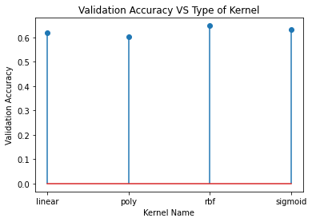
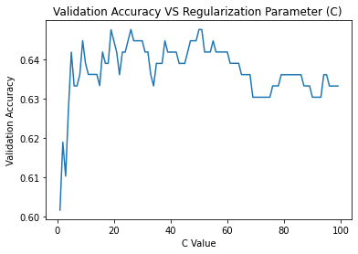
For different kinds of kernels used to compute the distance between two vectors, rbf kernel clearly showed a higher value of validation accuracy for a fixed value of C and gamma. The regularisation parameter for L2 penalty, increases the val accuracy upto a certain value. However, the accuracy decreases after the peak value of 50.
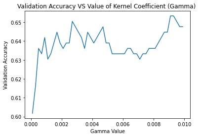
| Prediction Values | ||
|---|---|---|
| Actual | 0 | 1 |
| 0 | 43 (TN) | 1 (FP) |
| 1 | 31 (FN) | 2 (TP) |
In the figure above, it can be seen that the accuracy value increases steeply in the beginning but fluctuates in the middle. However, the trend is always increasing and reaches a maximum at the best value of the parameter. The confusion matrix on the test-set is also illustrated as the table above. Observation : The value of False negatives is very high which reduced the value of true positives significantly. (Similar to logistic regression)
The hyper-parameters are:
Bootstrapping was set to True. The best parameters and results obtained were:
| Parameter Name | Parameter Value |
|---|---|
| N_estimators | 180 |
| Max_depth | 5 |
| Min_Samples_split | 5 |
| Min_Samples_leaf | 2 |
| Validation accuracy | 65.63% |
For the best set of parameters, the trends in validation accuracy was observed for a particular hyper-parameter, keeping the other hyper-parameters constant. The general norm is that the number of estimators will not reduce the validation accuracy, but after a certain number, the validation accuracy doesn’t change. We have observed a different trend in our case. It can be attributed to inherit properties of the dataset and other parameters.
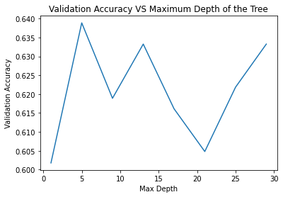
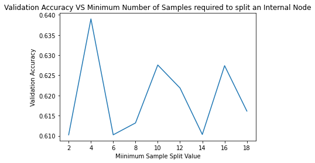
As we increase the depth of the tree, overfitting increases and validation accuracy decreases. We see that the maximum value of val accuracy is obtained at max_depth=5 (low value). Irregular trends were observed in the above two graphs. The exact relation between the number of samples in the leaf nodes and the validation accuracy didn’t follow a consistent trend. It varied heavily. The confusion matrix on the test-set obtained is given below.
| Prediction Values | ||
|---|---|---|
| Actual | 0 | 1 |
| 0 | 39 (TN) | 5 (FP) |
| 1 | 22 (FN) | 11 (TP) |
From the above matrix, we observed that random forest did a better job compared to the other two algos in reducing the number of false positives and increasing the true positives by a significant amount.
The base estimator for this boosting method was considered to be a Decision tree with a max_Depth =1 to reduce overfitting. The hyper-parameters are:
The best parameters and results obtained are given in table below.
| Parameter Name | Parameter Value |
|---|---|
| N_estimators | 250 |
| Learning_rate | 0.01 |
| Validation accuracy | 67.72% |
For the best set of parameters, the trends in validation accuracy was observed for a particular hyper-parameter, keeping the other hyper-parameters constant. The accuracy increased with the number of estimators and it reduced after reaching a peak value.
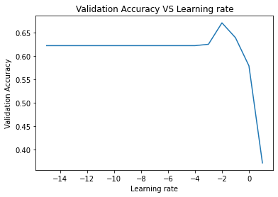
| Prediction Values | ||
|---|---|---|
| Actual | 0 | 1 |
| 0 | 39 (TN) | 5 (FP) |
| 1 | 27 (FN) | 6 (TP) |
We observe that the validation accuracy doesn’t change with learning rate(lr) for lower values of lr. However, it reaches a peak and drops after a specific value. The confusion matrix on the test-set is given above. From the above matrix, we observed that the boosting algorithm was not very successful in reducing the false negatives, which appears to be a problem for future experimentation.
The hyper-parameters are:
The best parameters and results obtained are given below.
| Parameter Name | Parameter Value |
|---|---|
| ETA | 1e-05 |
| Gamma | 10 |
| Alpha | 1e-05 |
| Reg_lambda | 1 |
| Validation accuracy | 65.25% |
For the best set of parameters, the trends in validation accuracy was observed for a particular hyper-parameter, keeping the other hyper-parameters constant.
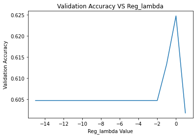
This is an interesting observation. The learning rate did not have any impact in determining the accuracy. The regularisation parameters, alpha - for L1, didn’t affect the accuracy in any way. From this observation, it can be inferred that L1 regularisation didn’t help the model reduce overfitting. However, Lambda - for L2, didn’t affect the accuracy for smaller values, rose to a peak and fell steeply. For our dataset, L1 regularisation was impactless in the boosting algorithm. The confusion matrix on the test-set is given below.
| Prediction Values | ||
|---|---|---|
| Actual | 0 | 1 |
| 0 | 38 (TN) | 6 (FP) |
| 1 | 26 (FN) | 7 (TP) |
The results were similar to that of the adaboost case. The metrics we evaluated our methods (test set) included test accuracy, precision and recall.
| Model | Test Accuracy | Precision | Recall |
|---|---|---|---|
| Logistic Regression | 0.57 | 0.54 | 0.57 |
| SVM | 0.59 | 0.62 | 0.58 |
| Random Forest | 0.62 | 0.56 | 0.61 |
| Random Forest (without FAMD) | 0.65 | 0.66 | 0.65 |
| Adaboost | 0.58 | 0.57 | 0.53 |
| XGBoost | 0.58 | 0.57 | 0.54 |
4.1.2 Description of Experiments with BERT Features
In this setup, the DistilBert encodings of the abstract were considered. DistilBert was developed by HuggingFace by leveraging knowledge distillation during the pre-training phase. We use DistilBert as it reduces the size of a BERT model by 40%, while retaining 97% of its language understanding capabilities and being 60% faster. [21]. Each abstract encoding is a 768 element long vector. PCA was implemented on the data reducing the feature space to 134 components which retained 95% variance. Each classifier was fitted on the training data and hyperparameter tuning was done on a 10-fold cross validation set for SVM and 3-fold for the rest. Naive Baye’s could not be implemented on BERT as the features have negative values. Implementing SVM was a good idea since it is effective when the number of dimensions is high.
- SVM
- Random Forest
- Logistic Regression
The best parameters and results obtained were:
| Parameter Name | Parameter Value |
|---|---|
| Kernel | poly |
| Gamma | 0.0041 |
| C | 1 |
| Validation accuracy | 60.47% |
| Prediction Values | ||
|---|---|---|
| Actual | 0 | 1 |
| 0 | 41 (TN) | 3 (FP) |
| 1 | 28 (FN) | 5 (TP) |
The confusion matrix on the test data is given above.
The best parameters and results obtained were:
| Parameter Name | Parameter Value |
|---|---|
| n_estimators | 50 |
| max_depth | 25 |
| min_samples_split | 15 |
| min_samples_leaf | 5 |
| Validation accuracy | 62.47% |
| Prediction Values | ||
|---|---|---|
| Actual | 0 | 1 |
| 0 | 42 (TN) | 2 (FP) |
| 1 | 28 (FN) | 5 (TP) |
RF performs the best amongst all algos for BERT. The confusion matrix on the test data is given above.
In our experiment, we have set the solver as 'liblinear' and max iterations as 700. The best parameters and results obtained were:
| Parameter Name | Parameter Value |
|---|---|
| Penalty | l1 |
| C | 43 |
| fit_intercept | True |
| class_weight | None |
| Validation accuracy | 56.44% |
| Prediction Values | ||
|---|---|---|
| Actual | 0 | 1 |
| 0 | 23 (TN) | 21 (FP) |
| 1 | 20 (FN) | 13 (TP) |
The validation accuracy for logistic regression is lower than the rest of the algorithms used. The confusion matrix on the test data: The metrics we evaluated our methods (test set) included test accuracy, precision and recall.
| Model | Test Accuracy | Precision | Recall |
|---|---|---|---|
| SVM | 0.60 | 0.61 | 0.60 |
| Random Forest | 0.61 | 0.65 | 0.61 |
| Logistic Regression | 0.47 | 0.47 | 0.47 |
Thus we see while RF performs the best on bert, LR gives a more balanced confusion matrix. All algorithms do a poor job of predicting the true positives.
4.1.3 Description of Experiments with TF-IDF Features
In this setup, only the tf-idf encodings of the abstract were considered. There were 6230 features in both train and test dataset. PCA was implemented on the data reducing the feature space to 265 components which retained 85% variance. Each classifier was fitted on the training data and hyperparameter tuning was done on a 10-fold cross validation set. Following supervised learning algorithms were implemented:
- Complement Naive Bayes
- Multinomial Naive Bayes
- Random Forest
- Logistic Regression
Naive Baye’s suits the idea of tf-idf well since it has to do with word count and occurrence. Only two of the many Naive Baye’s variations suit our datset. The best parameters and results obtained were:
| Parameter Name | Parameter Value |
|---|---|
| Alpha | 3.4 (default=1) |
| Validation accuracy | 60.17% |
| Prediction Values | ||
|---|---|---|
| Actual | 0 | 1 |
| 0 | 43 (TN) | 1 (FP) |
| 1 | 31 (FN) | 2 (TP) |
The confusion matrix on the test data is given above. Alpha is the additive smoothing parameter. It can be seen that complement naive bayes does a good job in finding the true negatives. However, the higher number of false negatives in naive bayes has decreased the number of true positives.
Multinomial Naive Bayes was chosen as it is supposed to work well with text classification using discrete features or tfi-df features. The best parameters and results obtained were:
| Parameter Name | Parameter Value |
|---|---|
| Alpha | 0.34 (default=1) |
| Validation accuracy | 60.17% |
| Prediction Values | ||
|---|---|---|
| Actual | 0 | 1 |
| 0 | 40 (TN) | 4 (FP) |
| 1 | 29 (FN) | 4 (TP) |
We can see that the validation accuracy in multinomial naive bayes is the same as the validation accuracy in complement naive bayes. The confusion matrix on the test data:
The best parameters and results obtained were:
| Parameter Name | Parameter Value |
|---|---|
| n_estimators | 1100 |
| max_features | auto |
| max_depth | None |
| min_samples_split | 2 |
| bootstrap | True |
| Validation accuracy | 59.32% |
| Prediction Values | ||
|---|---|---|
| Actual | 0 | 1 |
| 0 | 44 (TN) | 0 (FP) |
| 1 | 33 (FN) | 0 (TP) |
Compared to SVM, complement naive bayes and multinomial naive bayes, the validation accuracy of random forest is low. The confusion matrix on the test data: Random Forest is not able to correctly predict the positive values. The number of true positives is 0. It works better for true negatives.
We have set the solver as 'liblinear' and max iterations as 2000. The best parameters and results obtained were:
| Parameter Name | Parameter Value |
|---|---|
| Penalty | l1 |
| C | 385.352 |
| fit_intercept | True |
| class_weight | None |
| Validation accuracy | 51.87% |
| Prediction Values | ||
|---|---|---|
| Actual | 0 | 1 |
| 0 | 28 (TN) | 16 (FP) |
| 1 | 20 (FN) | 13 (TP) |
The validation accuracy for logistic regression is lower than the rest of the algorithms used. The confusion matrix on the test data is given above.
| Model | Test Accuracy | Precision | Recall |
|---|---|---|---|
| Complement Naive Bayes | 0.58 | 0.62 | 0.58 |
| Multinomial Naive Bayes | 0.57 | 0.55 | 0.57 |
| SVM | 0.57 | 0.33 | 0.57 |
| Random Forest | 0.57 | 0.33 | 0.57 |
| Logistic Regression | 0.53 | 0.53 | 0.53 |
The number of true negatives found is lower than the other algorithms. However, the number of true positives is higher than the other algorithms. Overall, it does not do a very good job since the number of false positives and false negatives are also high. Thus overall we see that BERT performs much better than almost all TFIDF methods. The reason behind this is definitely that even though tf-idf representations provide weights to different words based only on the frequency and uniqueness they are unable to capture the word meaning in any sense. That’s why BERT works better for our dataset - because unlike tasks where each label is associated with a group of words (sentiment analysis), here meaning of the word matters more than its chances of belonging to a set of words (eg. positive/negative).
4.1.4 Comparison with other methods
In our approach, we believe the novelty in the experimentation is brought through the use of BERT and tf-idf encodings of the abstract. While building the features from the raw research paper, features like the abstract complexity, abstract novelty, words from the top title words, research strength score were incorporated in our approach. Instead of building features on the frequency of words on content or abstract, readability and complexity is taken into consideration. In the modelling part, different tree based models were studied with a large range of hyper-parameters.
4.2 Unsupervised
We try the following unsupervised clustering algorithms in our approach. Motivation behind using unsupervised techniques was to find/observe latent patterns in the data: for example, papers from one topic being accepted more than others. For all the approaches, the data was properly standardized and normalized with dimensionality being reduced to 2 by PCA for visualisation in 2D. The analysis and results are as follows:
4.2.1 Clustering on BERT
4.2.1.1 [BERT Encoding] KMeans
The clustering is performed on the BERT encoding of the abstract text. By performing this we try to find if papers can be clustered together into some topics which can help in the prediction of acceptance. To perform K-Means the obvious requirement is the “k”. To find that out we used the popular elbow method whose results are also attached. As observed from the figure, we don’t get a clear elbow. Though making it difficult but it is not surprising because in clustering text, the error will keep on decreasing almost linearly until every sample is its own cluster. We notice a slight indication of elbow at around k=6 which is something we use.
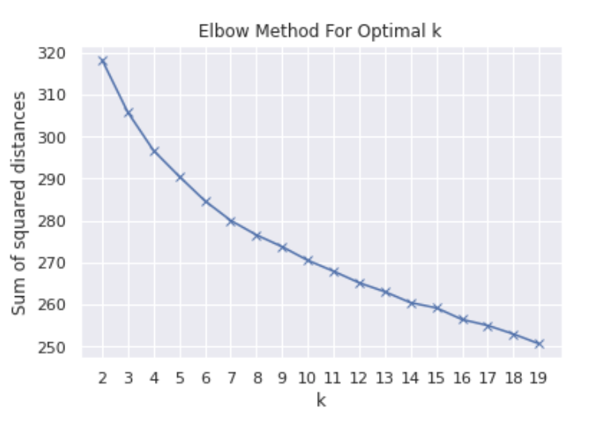
We then also plot the acceptance/rejection and try to compare it with the clusters we got to see if some topic has more success rate than others. Comparing the percentages of acceptance, we see that cluster 0 clearly has led to more acceptances and for better success, submitting papers on these topics might help better chances. Cluster 0 has 1 out of 2 papers getting accepted in contrast to cluster 2, which has 1 out of 3 getting accepted. If we see the papers inside cluster 0, closest to the cluster centres one can get more idea of the theme of papers accepted in the cluster.
| Cluster | Acceptance Rate | Top 5 Papers Nearest to Centroid |
|---|---|---|
| 0 | 47.06 | 'Online Structure Learning for Sum-Product Networks with Gaussian Leaves', 'Pruning Convolutional Neural Networks for Resource Efficient Inference', 'Joint Multimodal Learning with Deep Generative Models', 'Multi-label learning with semantic embeddings', 'MS MARCO: A Human-Generated MAchine Reading COmprehension Dataset' |
| 1 | 41.67 | 'Lossy Image Compression with Compressive Autoencoders', 'Deep Multi-task Representation Learning: A Tensor Factorisation Approach', 'Structured Attention Networks', 'The Variational Walkback Algorithm', 'Nonparametrically Learning Activation Functions in Deep Neural Nets' |
| 2 | 32.61 | 'Generating Interpretable Images with Controllable Structure', 'Bridging Nonlinearities and Stochastic Regularizers with Gaussian Error Linear Units', 'A Context-aware Attention Network for Interactive Question Answering', 'Metacontrol for Adaptive Imagination-Based Optimization', 'Adaptive Feature Abstraction for Translating Video to Language' |
| 3 | 42.05 | ‘Paleo: A Performance Model for Deep Neural Networks', "Here's My Point: Argumentation Mining with Pointer Networks", 'PREDICTION OF POTENTIAL HUMAN INTENTION USING SUPERVISED COMPETITIVE LEARNING', 'Learning to Compose Words into Sentences with Reinforcement Learning', 'The loss surface of residual networks: Ensembles and the role of batch normalization' |
| 4 | 37.25 | ‘Modelling Relational Time Series using Gaussian Embeddings', 'Discovering objects and their relations from entangled scene representations', 'Stick-Breaking Variational Autoencoders', 'A Baseline for Detecting Misclassified and Out-of-Distribution Examples in Neural Networks', 'Diverse Beam Search: Decoding Diverse Solutions from Neural Sequence Models' |
| 5 | 38.03 | Recurrent Batch Normalization', 'Reinforcement Learning with Unsupervised Auxiliary Tasks', 'Sequence to Sequence Transduction with Hard Monotonic Attention', 'Exploring LOTS in Deep Neural Networks', 'Revisiting Classifier Two-Sample Tests' |
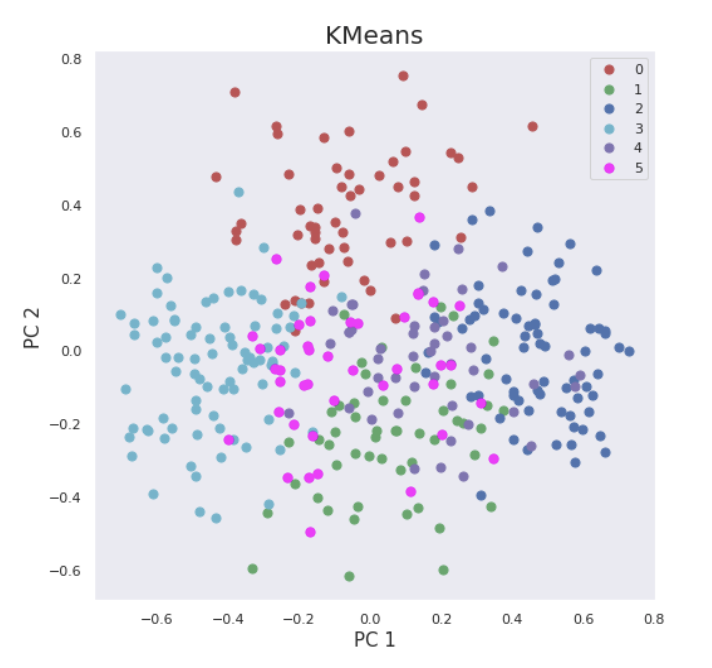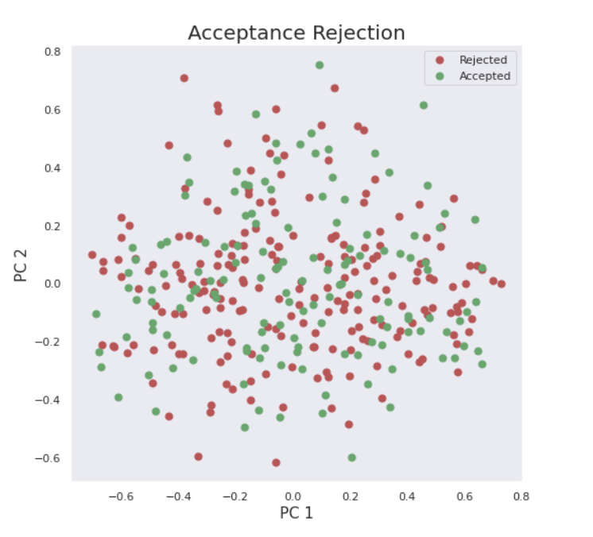
4.2.1.2 [BERT Encoding] Agglomerative Hierarchical
We performed a similar analysis as to KMeans in the above section, in order to highlight the differences in both the clustering algorithms. Although we don’t need a “k” here, we need to cut the dendrogram at horizontal level in order to get clusters. Since level 0 had too many memberships, we decided to cut at level 3 and get 6 clusters like KMeans.
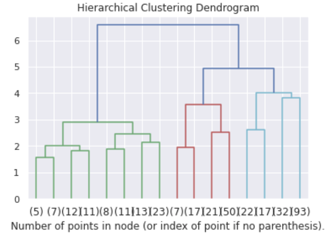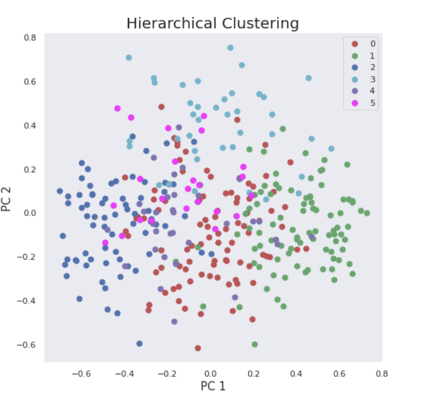
We then calculate the Adjusted Rand Index for both the clustering techniques which comes out to be 0.32 (on a scale of 0 to 1). This indicates substantial difference in the clustering by the two algorithms even though the number of clusters are the same. This can be attributed to the different ways in which both algorithms work. K Means assumes spherical clusters which might not always be the case. On the other other hierarchical clustering, recursively merges the pair of clusters that minimally increases a given linkage distance.
4.2.2 Clustering on TF-IDF
We have also clustered the tf-idf embeddings for paper abstract contents, to analyse the difference in using TF-IDF and BERT encodings for clustering.
4.2.2.1 [TF-IDF Encoding] KMeans
With the number of components=6, we have been able to find out the top 10 keywords for each of the clusters and the papers which are closest to the cluster centers. Thus, if we look at the keywords of the clusters, we can see that there is some underlying pattern in the papers. Cluster 3 - keywords like ‘word’, ‘language’, ‘representations’,’etc. in their abstract and when we look at the titles of the papers clustered together, we can see that they are actually quite similar in the topics they are encompassing - in this case, kinds of embeddings for text, word vectors, etc. Meanwhile in Clusters 0 and 5, we can see that the governing keywords in the cluster are terms like ‘neural networks’, etc. This cluster mainly contains papers which deal with neural networks in natural language processing. Cluster 4 mainly brings together papers dealing with Generative Adversarial Networks.
| Clusters | Keywords | Top papers nearest to the centroid |
|---|---|---|
| 0 | 'network', 'deep', 'networks', 'neural', 'adversarial' | Simple Black-Box Adversarial Perturbations for Deep Networks, Paleo: A Performance Model for Deep Neural Networks, HolStep: A Machine Learning Dataset for Higher-order Logic Theorem Proving, Adversarial Machine Learning at Scale, Adjusting for Dropout Variance in Batch Normalization and Weight Initialization |
| 1 | ‘latent', 'variational', 'inference', 'models', 'model’ | 'PixelVAE: A Latent Variable Model for Natural Images', 'Variational Lossy Autoencoder', 'Bridging Nonlinearities and Stochastic Regularizers with Gaussian Error Linear Units', 'Learning to super-optimize programs' |
| 2 | 'learning', 'agent', 'reinforcement', 'policy', 'reward' | 'Reinforcement Learning through Asynchronous Advantage Actor-Critic on a GPU', 'Transformational Sparse Coding', 'Communicating Hierarchical Neural Controllers for Learning Zero-shot Task Generalization', 'Recursive Regression with Neural Networks: Approximating the HJI PDE Solution', 'A Deep Learning Approach for Joint Video Frame and Reward Prediction in Atari Games' |
| 3 | ‘model', 'word', 'language', 'translation', 'sentence' | 'Offline bilingual word vectors, orthogonal transformations and the inverted softmax', 'Sequence to Sequence Transduction with Hard Monotonic Attention', 'Multi-view Recurrent Neural Acoustic Word Embeddings', 'Pointer Sentinel Mixture Models', 'A Convolutional Encoder Model for Neural Machine Translation' |
| 4 | 'generative', 'distribution', 'gans', 'data', 'samples' | 'Fast Adaptation in Generative Models with Generative Matching Networks', 'Improving Sampling from Generative Autoencoders with Markov Chains', 'Cooperative Training of Descriptor and Generator Networks', 'CONTENT2VEC: SPECIALIZING JOINT REPRESENTATIONS OF PRODUCT IMAGES AND TEXT FOR THE TASK OF PRODUCT RECOMMENDATION', 'Improving Generative Adversarial Networks with Denoising Feature Matching' |
| 5 | 'neural', 'networks', 'network', 'training', 'architectures' | 'DRAGNN: A Transition-Based Framework for Dynamically Connected Neural Networks', 'Semi-Supervised Detection of Extreme Weather Events in Large Climate Datasets', 'Lie-Access Neural Turing Machines', 'Regularizing Neural Networks by Penalizing Confident Output Distributions' |
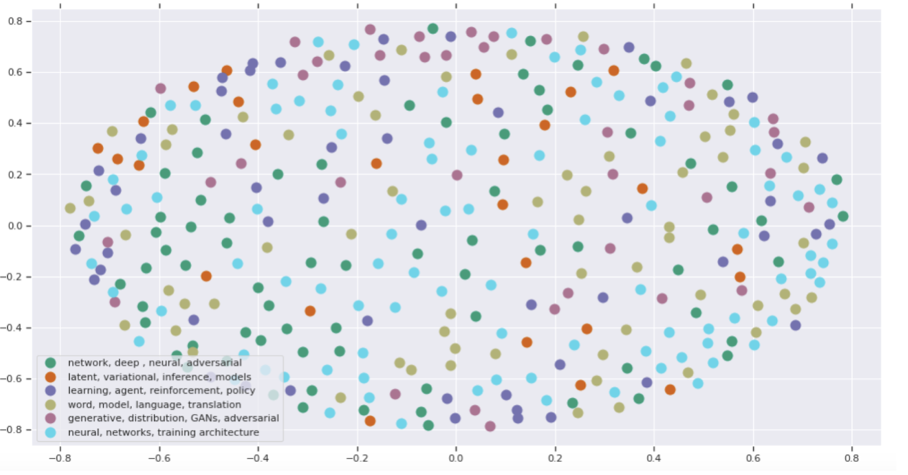
To visualize these clusters by using distance between tf-idf vectors as a similarity measure between papers, we have used multidimensional scaling to transform the data points into an abstract cartesian space. Distance is defined as 1 - the cosine similarity of each document. Cosine similarity is measured against the tf-idf matrix and can be used to generate a measure of similarity between each paper and the other papers in the corpus (each abstract among the abstracts). Subtracting it from 1 provides cosine distance which can be used for plotting on a euclidean (2-dimensional) plane. Thus, for K-Means using TF-IDF vectors, we get:
4.2.2.2 [TF-IDF Encoding] Gaussian Mixture Model
We have further used the bayesian gaussian mixture model to cluster the tf-idf vectors of the paper abstracts and most of the clusters we get are similar with the exception of one cluster (Cluster 3) which has been able to capture the word convolutional neural network as an important keyword in some category of papers.
4.2.3 Comparing TF-IDF and BERT
One instant thing which we observed is that BERT is comparatively time-consuming than TF-IDF, thus giving TF-IDF the edge in time sensitive matters. Also, Bert is typically used for sentence embeddings and for sentences with strong syntactic patterns. On the other hand, TF-IDF is useful for finding patterns in words. Since there is no ground truth available and because of the fact that a single paper can span multiple “topics”, comparing the data on our results is very subjective. However if we look closely, one can observe that the different papers inside one cluster in the BERT approach, seem to be more coherent.
4.2.4 Miscellaneous
4.2.4.1 Topic Modelling using Latent Dirichlet Allocation
We further wanted to explore the possibility of being able to extract major topics the papers were centered around, given a dataset of papers submitted to various conferences. To do this, we have used a statistical technique called the Latent Dirichlet Allocation (LDA) which is used to discover and extract abstract topics in a collection of documents, in our case, papers.
4.2.4.2 Word cloud
To make utmost use of the comments that reviewers make we also ran a word count algorithm - visualizing it in the form of the popular technique word cloud where the size of the text is proportional to the frequency of that particular word. Of course we perform a stopword (both technical and plain english) removal, and we then try to analyse the comments. The first image below is from the reviewers’ comments of an accepted paper, and the second one for rejected paper.
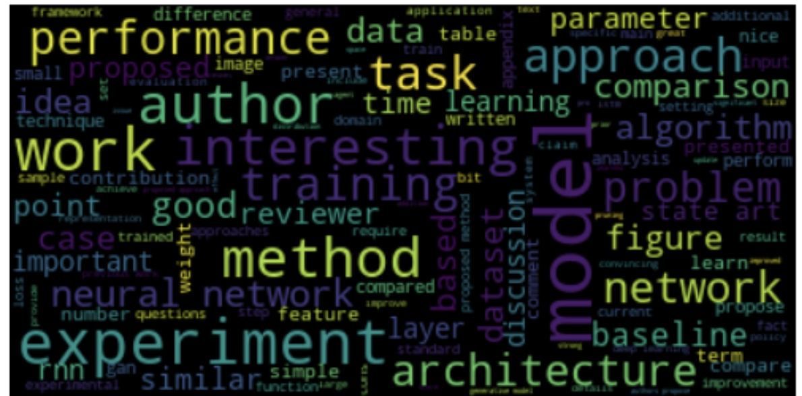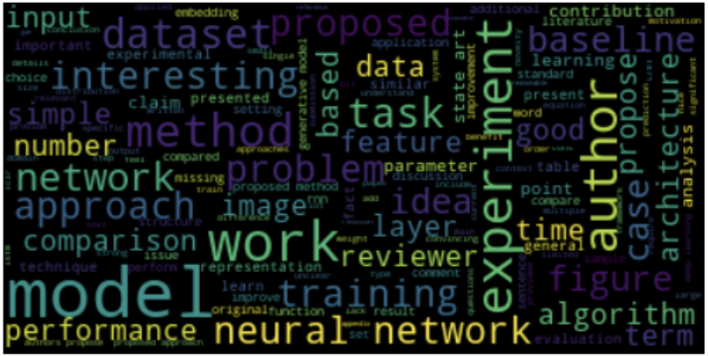
In the first image it’s pretty easy to note that the top words are “performance”, “architecture”, “approach”, “good” are the top words. Clearly the reviewers pay good attention to these things and expect a publication which is “performant”, with a good/better “architecture” and a novel “approach”. Thus paper submissions to ICLR should focus on these. On the other hand, the word cloud from comments of rejected papers focus on words like “algorithm”, “approach”, “idea” and “model” which suggest that reviewers probably reject papers on these things. Hence authors submitting papers to ICLR should be ready for critiquing their algorithm and idea.
5. Discussion and Conclusion
We tried 14 supervised learning models and 5 unsupervised. Our overall accuracy is ~65 which is not very higher than that of the baseline in PeerRead. While the baseline model algorithms are not known, our Random Forest model without dimension reduction gave the best accuracy, which shows that the feature engineering we performed especially by adding our own new features definitely helped. It is possible that our model did not show a significant improvement on the baseline because of the small amount of data available to train and test on (only 349 and 77 data points respectively).
Our primary goal was to test the hypothesis that non-core content factors of a research paper could indicate the potentiality of its acceptance. As such, the accuracy and results we got do not indicate that our hypothesis holds. We need much more training and testing data for the results to start showing a pattern, so that the hypothesis can be proved or disproved. Our experiments were conducted for a particular year of only one conference. Therefore, extrapolating the results to generalise any claim would be incorrect. While we did have data on multiple conferences, it was fairly incomplete especially in terms of lack of labels. If a huge amount of complete, consistent data for multiple conferences becomes available, we could train our models on that and further test our hypothesis. Thus, scaling widely across conferences and years could help build a strong prediction model.
Our second motivation was to be able to assist peer reviewers with paper recommendations. Since our first hypothesis hasn't been proved, we do not feel that our project in its current stage is a useful tool for this process. Even if our models start giving excellent results, for such a recommendation tool to be foolproof, one would need to perform finer and wiser feature engineering on the core-content of paper along with the non-core content. Also, we were successfully able to identify clusters/topics which the reviewers may be biased towards which is something new paper submissions can keep in mind. Word cloud built more on this idea. We also compared different sentence embeddings like BERT, TF-IDF along with comparing different clustering algorithms. We were also able to confirm that the number of clusters is 6 by using the elbow method and observing the dendrograms.
Future work could include trying to cluster and classify papers based on the conferences. This could be based on developing a Paper2Vec model, which could also be used for other downstream thoughts. We could also use the model of one conference to predict the acceptance in another conference and if both conference models show a correlation in predictions, it could be concluded that the two conferences prefer similar types of papers.
References
- D. Kang, W. Ammar, B. Dalvi, M. van Zuylen, S. Kohlmeier, E. H. Hovy, and R. Schwartz, “A Dataset of Peer Reviews (PeerRead): Collection, Insights and NLP Applications,” CoRR, vol. abs/1804.09635, 2018.
- lixin4ever, “Statistics of acceptance rate for the main AI conferences,” 12 2018.
- Y. Dong, R. A. Johnson, and N. V. Chawla, “Can Scientific Impact Be Predicted?,” IEEE Transactions on Big Data, vol. 2, pp. 18–30, 2016.
- D. McNamara, P. Wong, P. Christen, and K. S. Ng, “Predicting High Impact Academic Papers Using Citation Network Features,” in Trends and Applications in Knowledge Discovery and Data Mining, (Berlin, Heidelberg), pp. 14–25, Springer Berlin Heidelberg, 2013.
- “CVPR Paper Controversy; ML Community Reviews Peer Review,” Medium, Oct 2018.
- Xie, Jianjun. (2016). Predicting Institution-Level Paper Acceptance at Conferences: A Time-Series Regression Approach.
- Recurrent Neural Network for Acceptance Acceptance https://mc.ai/recurrent-neural-network-for-prediction-acceptance[Online]
- J.-B. Huang, “Deep Paper Gestalt,” 12 2018.
- C. von Bearnensquash. Paper gestalt. In Secret Proceedings of Computer Vision and Pattern Recognition, 2010. 1, 2, 4.
- Qian, Yujie & Dong, Yinpeng & Ma, Ye & Jin, Hailong & Li, Juanzi. (2016). Feature Engineering and Ensemble Modeling for Paper Acceptance Rank Prediction.
- M. C. William Jen, Shichang Zhang, “Predicting Conference Paper Acceptance,” 12 2018.
- E. Walsh, Michael W Rooney, Louis Appleby, and Greg Wilkinson. 2000. Open peer review: a ran-domised controlled trial.The British journal of psy-chiatry : the journal of mental science176:47–51.
- Aliaksandr Birukou, Joseph R. Wakeling, Claudio Bar-tolini, Fabio Casati, Maurizio Marchese, KatsiarynaMirylenka, Nardine Osman, Azzurra Ragone, Car-les Sierra, and Aalam Wassef. 2011. Alternatives topeer review: Novel approaches for research evalua-tion. InFront. Comput. Neurosci.
- Azzurra Ragone, Katsiaryna Mirylenka, Fabio Casati,and Maurizio Marchese. 2011. A quantitative analy-sis of peer review. InProc. of ISSI.
- Drummond Rennie. 2016. Make peer review scien-tific: thirty years on from the first congress on peerreview, drummond rennie reflects on the improve-ments brought about by research into the process–and calls for more.Nature535(7610):31–34.
- Seán G Roberts and Tessa Verhoef. 2016.Double-blind reviewing at evolang 11 reveals gender bias.Journal of Language Evolution1(2):163–167.
- Andrew Tomkins, Min Zhang, and William D Heavlin.2017. Single versus double blind reviewing at wsdm2017. ArXiv:1702.00502.
- Claire Le Goues, Yuriy Brun, Sven Apel, EmeryBerger, Sarfraz Khurshid, and Yannis Smaragdakis.2017.Effectiveness of anonymization in double-blind review. ArXiv:1709.01609.
- Transformers https://github.com/huggingface/transformers [Online]